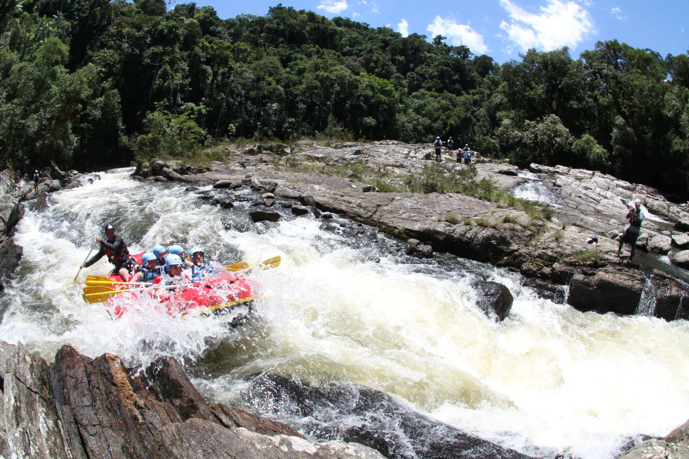
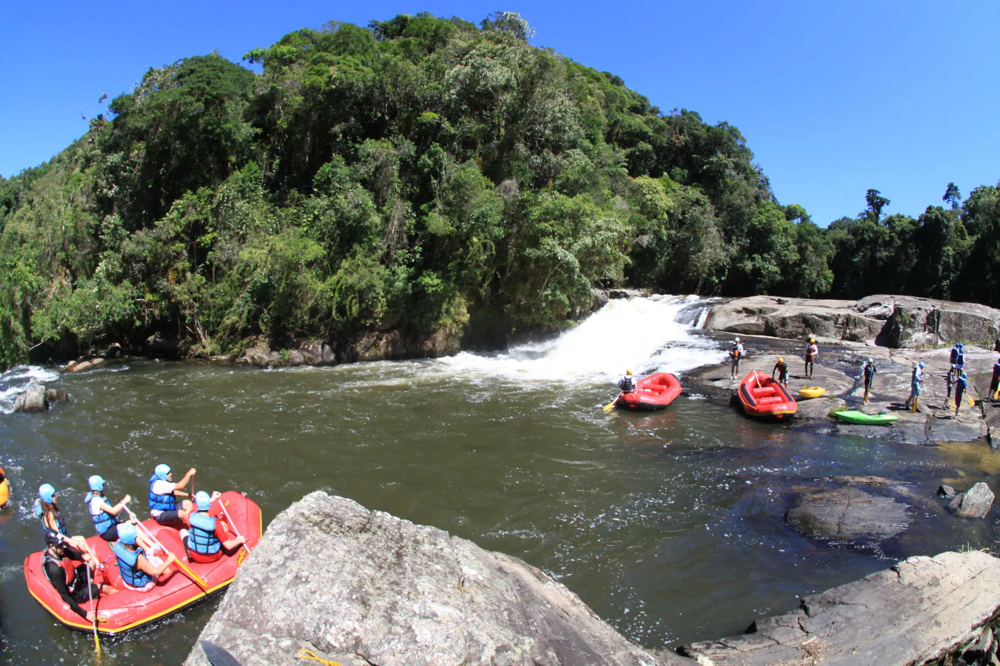
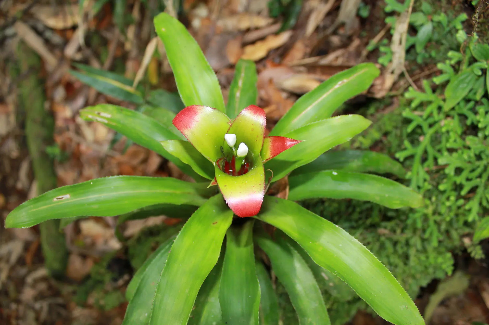
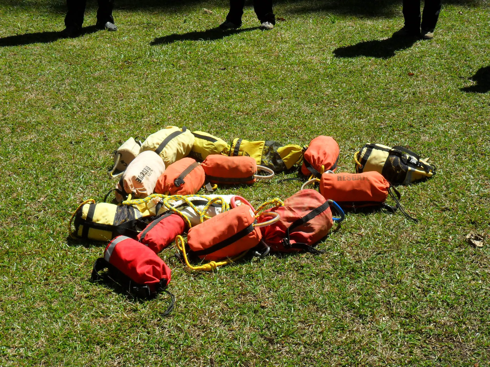

Expedição 4 horas
Rio Paraibuna, Natividade da Serra
- RecepçãoComplexo Manacá da Serra, km 59, até 8h
- DescidaCorredeiras entre a Floresta Atlântica
- PausaLanche na Praia do Funilzão
- IncluiEquipamento completo e seguro viagem
Expedições de rafting conduzidas com o rigor de quem certificou a própria segurança — e o cuidado de quem recebe convidados em casa.
Há quase três décadas descemos o Rio Paraibuna com o mesmo princípio: a aventura é o prato principal, mas são os detalhes — a equipe certificada, o equipamento impecável, o lanche à beira de uma praia de água transparente — que fazem a experiência inesquecível.
Cia. de Rafting · São Luiz do Paraitinga
Como num menu degustação, cada expedição tem seu ritmo: a de 4 horas é leve e luminosa; a de 6 horas é intensa e profunda, dentro da zona de amortecimento do Parque Estadual da Serra do Mar.
Rio Paraibuna, Natividade da Serra

Núcleo Santa Virgínia · Classes II, III e IV


O Rio Paraibuna corre pela Mata Atlântica, considerada Patrimônio da Humanidade pela UNESCO. Descer suas corredeiras é conhecer de perto a diversidade de espécies vegetais e animais de uma das florestas mais importantes do mundo.
A operação acontece entre São Luiz do Paraitinga — importante centro cultural e arquitetônico — e Natividade da Serra, no Vale do Paraíba.
Nossa história
Nada é improvisado. Cada descida segue um Sistema de Gestão da Segurança certificado e é conduzida por uma equipe formada nas normas brasileiras e internacionais.
Caminhadas guiadas no Parque Estadual da Serra do Mar e um curso completo para quem quer aprender a conduzir no rio.

Conte a data e o tamanho do grupo — a Cia. cuida do resto.